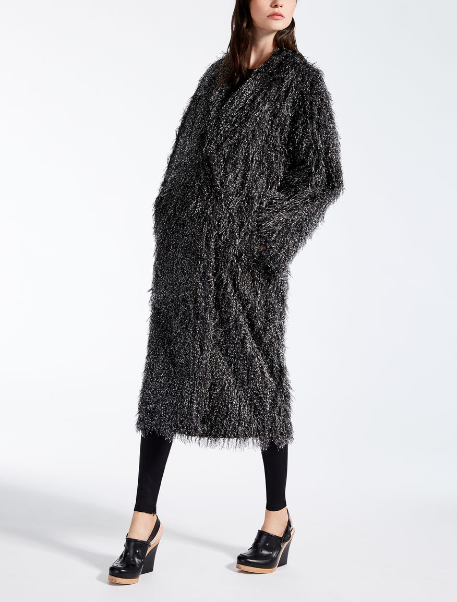
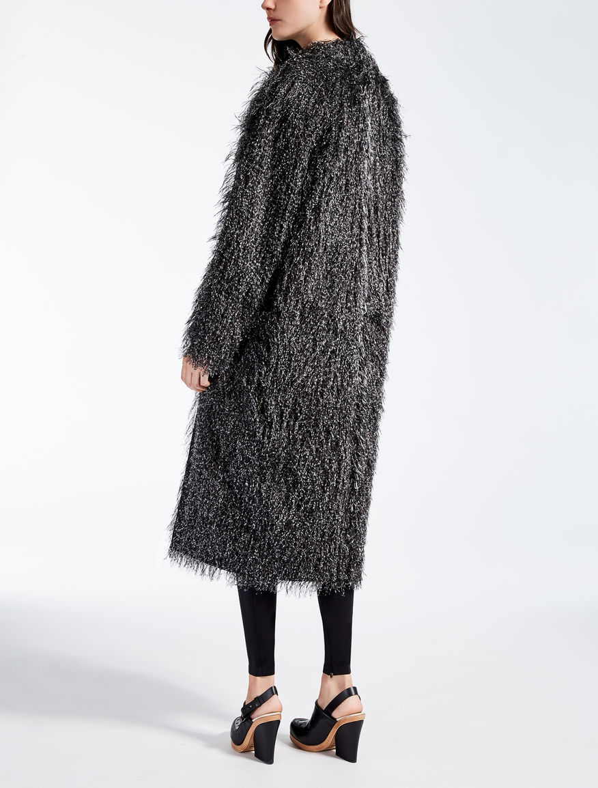

Жаккардовое пальто «Paride»
 Описание товара
Жаккардовое пальто «оверсайз» с пятнистым рисунком. Отворотный воротник и боковые карманы.
Характеристики товара
- Brand: MaxMara; Производство: Италия.
- Цвет: Темно-коричневый.
- Ткань: 100% полиэстер; Подкладка: 100% хлопок.
- Не стирать. Не отбеливать. Не сушить в стиральной машине. Гладить при холодной температуре. Профессиональная сухая чистка.
Подробное описание товара
Печатная хлопковая подкладка из поплина. Двубортное кнопочное крепление.